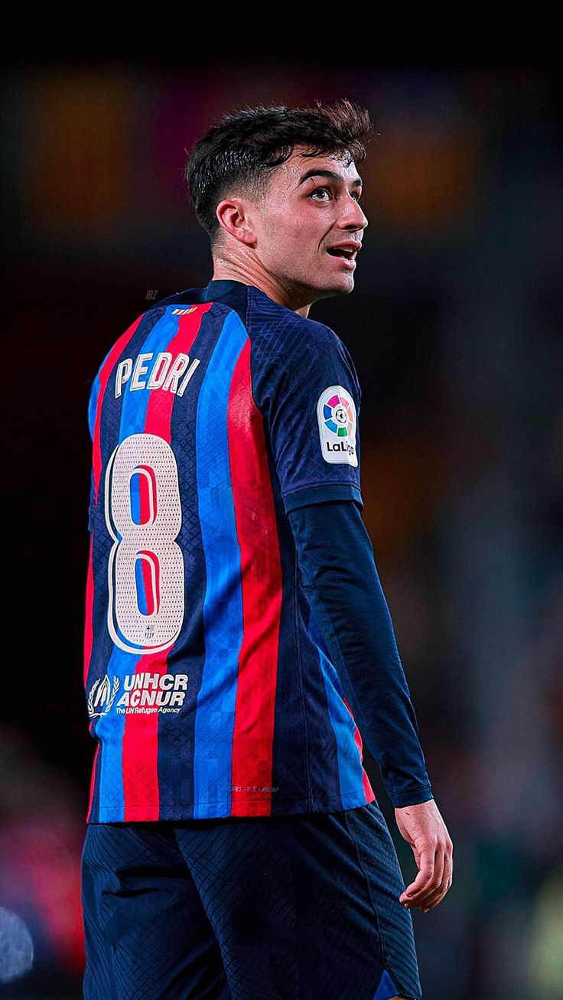

Pedri
Powrót na stronę głowną
Pedro González López, znany jako Pedri, urodził się 25 listopada 2002 roku w Tegueste, Hiszpania. Jest Hiszpanem i jednym z najbardziej obiecujących młodych pomocników. Karierę rozpoczął w UD Las Palmas, a od 2020 roku gra w FC Barcelonie.
